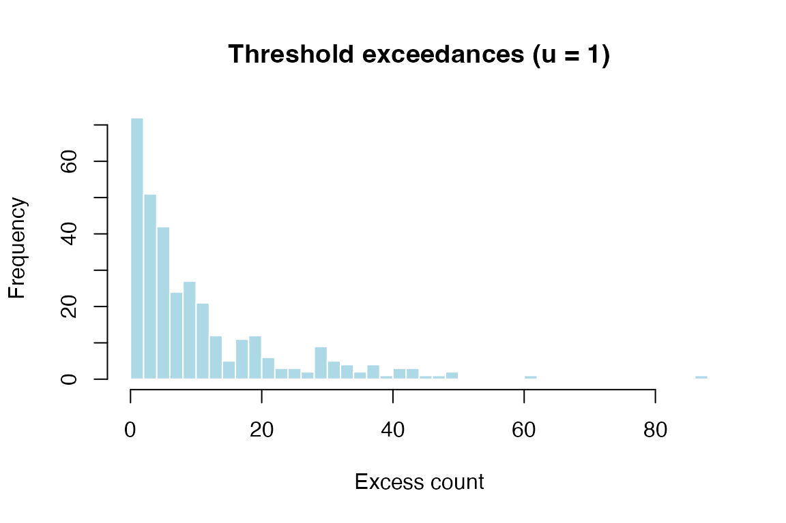
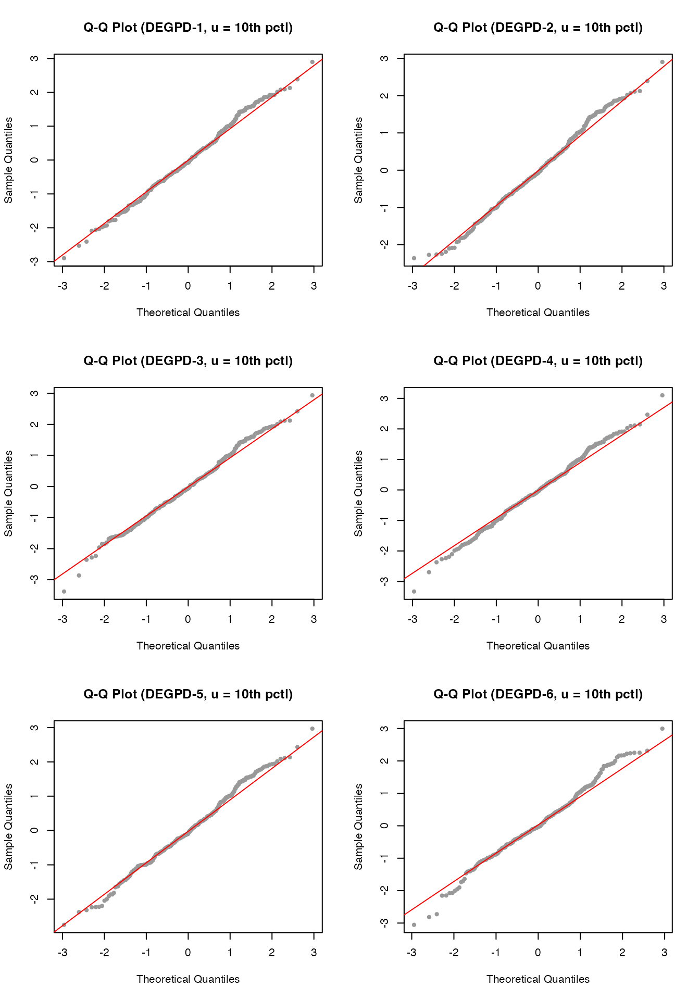

This vignette demonstrates threshold exceedance modeling using the Discrete Extended Generalized Pareto Distribution (DEGPD). When modelling discrete extreme values, observations above a threshold are extracted, centered, and fitted with a DEGPD. We illustrate the approach with gaming and betting offense counts from New South Wales, Australia.
Data
library(egpd)
data(nsw_offenses)
str(nsw_offenses)
#> 'data.frame': 342 obs. of 1 variable:
#> $ offenses: int 3 3 6 8 4 7 5 2 3 4 ...
d <- nsw_offenses$offenses
plot(table(d), main = "Gaming and betting offenses (NSW)",
xlab = "Number of offenses", ylab = "Frequency")
Threshold selection
In extreme value analysis, we model only the observations that exceed a chosen threshold. The choice of threshold involves a bias–variance trade-off: a higher threshold gives better model fit but fewer observations.
We demonstrate two threshold choices: the 10th and 20th percentiles.
Threshold at 10th percentile
u10 <- floor(quantile(d, 0.10))
cat("Threshold u (10th percentile):", u10, "\n")
#> Threshold u (10th percentile): 1
y10 <- d[d >= u10] - u10
cat("Exceedances: n =", length(y10), "\n")
#> Exceedances: n = 328
hist(y10, breaks = 50, col = "lightblue", border = "white",
main = paste0("Threshold exceedances (u = ", u10, ")"),
xlab = "Excess count", ylab = "Frequency")
Fitting DEGPD models to the 10th-percentile exceedances
df10 <- data.frame(y = y10, x = rep(1, length(y10)))
fit10_m1 <- egpd(list(lsigma = y ~ 1, lxi = ~ 1, lkappa = ~ 1),
data = df10, family = "degpd", degpd.args = list(m = 1))
fit10_m2 <- egpd(list(lsigma = y ~ 1, lxi = ~ 1, lkappa1 = ~ 1, ldkappa = ~ 1,
logitp = ~ 1),
data = df10, family = "degpd", degpd.args = list(m = 2))
#> Final Hessian of negative penalized log-likelihood not numerically positive definite.
fit10_m3 <- egpd(list(lsigma = y ~ 1, lxi = ~ 1, ldelta = ~ 1),
data = df10, family = "degpd", degpd.args = list(m = 3))
fit10_m4 <- egpd(list(lsigma = y ~ 1, lxi = ~ 1, ldelta = ~ 1, lkappa = ~ 1),
data = df10, family = "degpd", degpd.args = list(m = 4))
fit10_m5 <- egpd(list(lsigma = y ~ 1, lxi = ~ 1, lkappa = ~ 1),
data = df10, family = "degpd", degpd.args = list(m = 5))
fit10_m6 <- egpd(list(lsigma = y ~ 1, lxi = ~ 1, lkappa = ~ 1),
data = df10, family = "degpd", degpd.args = list(m = 6))
aic10 <- data.frame(
Model = c("DEGPD-1", "DEGPD-2", "DEGPD-3", "DEGPD-4", "DEGPD-5", "DEGPD-6"),
npar = c(3, 5, 3, 4, 3, 3),
logLik = c(logLik(fit10_m1), logLik(fit10_m2), logLik(fit10_m3),
logLik(fit10_m4), logLik(fit10_m5), logLik(fit10_m6)),
AIC = c(AIC(fit10_m1), AIC(fit10_m2), AIC(fit10_m3),
AIC(fit10_m4), AIC(fit10_m5), AIC(fit10_m6))
)
aic10
#> Model npar logLik AIC
#> 1 DEGPD-1 3 -1126.689 2259.378
#> 2 DEGPD-2 5 -1128.527 2267.054
#> 3 DEGPD-3 3 -1126.477 2258.955
#> 4 DEGPD-4 4 -1126.537 2261.075
#> 5 DEGPD-5 3 -1126.936 2259.872
#> 6 DEGPD-6 3 -1126.736 2259.472
summary(fit10_m1)
#>
#> ** Parametric terms **
#>
#> logscale
#> Estimate Std. Error t value Pr(>|t|)
#> (Intercept) 2.26 0.17 13.38 <2e-16
#>
#> logshape
#> Estimate Std. Error t value Pr(>|t|)
#> (Intercept) -2.23 0.84 -2.66 0.00391
#>
#> logkappa
#> Estimate Std. Error t value Pr(>|t|)
#> (Intercept) 0.08 0.12 0.7 0.243
#>
#> ** Smooth terms **Threshold at 20th percentile
u20 <- floor(quantile(d, 0.20))
cat("Threshold u (20th percentile):", u20, "\n")
#> Threshold u (20th percentile): 3
y20 <- d[d >= u20] - u20
cat("Exceedances: n =", length(y20), "\n")
#> Exceedances: n = 274
hist(y20, breaks = 50, col = "lightblue", border = "white",
main = paste0("Threshold exceedances (u = ", u20, ")"),
xlab = "Excess count", ylab = "Frequency")
df20 <- data.frame(y = y20, x = rep(1, length(y20)))
fit20_m1 <- egpd(list(lsigma = y ~ 1, lxi = ~ 1, lkappa = ~ 1),
data = df20, family = "degpd", degpd.args = list(m = 1))
fit20_m2 <- egpd(list(lsigma = y ~ 1, lxi = ~ 1, lkappa1 = ~ 1, ldkappa = ~ 1,
logitp = ~ 1),
data = df20, family = "degpd", degpd.args = list(m = 2))
#> Final Hessian of negative penalized log-likelihood not numerically positive definite.
fit20_m3 <- egpd(list(lsigma = y ~ 1, lxi = ~ 1, ldelta = ~ 1),
data = df20, family = "degpd", degpd.args = list(m = 3))
fit20_m4 <- egpd(list(lsigma = y ~ 1, lxi = ~ 1, ldelta = ~ 1, lkappa = ~ 1),
data = df20, family = "degpd", degpd.args = list(m = 4))
fit20_m5 <- egpd(list(lsigma = y ~ 1, lxi = ~ 1, lkappa = ~ 1),
data = df20, family = "degpd", degpd.args = list(m = 5))
#> Final Hessian of negative penalized log-likelihood not numerically positive definite.
fit20_m6 <- egpd(list(lsigma = y ~ 1, lxi = ~ 1, lkappa = ~ 1),
data = df20, family = "degpd", degpd.args = list(m = 6))
aic20 <- data.frame(
Model = c("DEGPD-1", "DEGPD-2", "DEGPD-3", "DEGPD-4", "DEGPD-5", "DEGPD-6"),
npar = c(3, 5, 3, 4, 3, 3),
logLik = c(logLik(fit20_m1), logLik(fit20_m2), logLik(fit20_m3),
logLik(fit20_m4), logLik(fit20_m5), logLik(fit20_m6)),
AIC = c(AIC(fit20_m1), AIC(fit20_m2), AIC(fit20_m3),
AIC(fit20_m4), AIC(fit20_m5), AIC(fit20_m6))
)
aic20
#> Model npar logLik AIC
#> 1 DEGPD-1 3 -942.2068 1890.414
#> 2 DEGPD-2 5 -944.0447 1898.089
#> 3 DEGPD-3 3 -941.1046 1888.209
#> 4 DEGPD-4 4 -940.8346 1889.669
#> 5 DEGPD-5 3 -942.4606 1890.921
#> 6 DEGPD-6 3 -942.3979 1890.796Goodness of fit
# Fitted parameters for the 10th-percentile model 1
pars <- predict(fit10_m1, type = "response")
sigma <- pars$scale[1]; xi <- pars$shape[1]; kappa <- pars$kappa[1]
xvals <- 0:max(y10)
emp_pmf <- tabulate(y10 + 1, nbins = max(xvals) + 1) / length(y10)
fit_pmf <- ddiscegpd(xvals, sigma = sigma, xi = xi, kappa = kappa, type = 1)
plot(xvals[1:40], emp_pmf[1:40], type = "h", lwd = 2, col = "grey60",
main = "Empirical vs fitted PMF (DEGPD-1, u = 10th pctl)",
xlab = "Excess count", ylab = "Probability")
lines(xvals[1:40] + 0.2, fit_pmf[1:40], type = "h", lwd = 2, col = "steelblue")
legend("topright", legend = c("Empirical", "DEGPD-1"),
col = c("grey60", "steelblue"), lwd = 2)
Q-Q plots
Randomized quantile residuals for the 10th-percentile exceedance models:
set.seed(1)
par(mfrow = c(3, 2))
r10_1 <- rqresid(fit10_m1)
qqnorm(r10_1, main = "Q-Q Plot (DEGPD-1, u = 10th pctl)", pch = 20, col = "grey60")
qqline(r10_1, col = "red")
r10_2 <- rqresid(fit10_m2)
qqnorm(r10_2, main = "Q-Q Plot (DEGPD-2, u = 10th pctl)", pch = 20, col = "grey60")
qqline(r10_2, col = "red")
r10_3 <- rqresid(fit10_m3)
qqnorm(r10_3, main = "Q-Q Plot (DEGPD-3, u = 10th pctl)", pch = 20, col = "grey60")
qqline(r10_3, col = "red")
r10_4 <- rqresid(fit10_m4)
qqnorm(r10_4, main = "Q-Q Plot (DEGPD-4, u = 10th pctl)", pch = 20, col = "grey60")
qqline(r10_4, col = "red")
r10_5 <- rqresid(fit10_m5)
qqnorm(r10_5, main = "Q-Q Plot (DEGPD-5, u = 10th pctl)", pch = 20, col = "grey60")
qqline(r10_5, col = "red")
r10_6 <- rqresid(fit10_m6)
#> Warning in qnorm(u): NaNs produced
qqnorm(r10_6, main = "Q-Q Plot (DEGPD-6, u = 10th pctl)", pch = 20, col = "grey60")
qqline(r10_6, col = "red")
And for the 20th-percentile exceedance models:
set.seed(1)
par(mfrow = c(3, 2))
r20_1 <- rqresid(fit20_m1)
qqnorm(r20_1, main = "Q-Q Plot (DEGPD-1, u = 20th pctl)", pch = 20, col = "grey60")
qqline(r20_1, col = "red")
r20_2 <- rqresid(fit20_m2)
qqnorm(r20_2, main = "Q-Q Plot (DEGPD-2, u = 20th pctl)", pch = 20, col = "grey60")
qqline(r20_2, col = "red")
r20_3 <- rqresid(fit20_m3)
qqnorm(r20_3, main = "Q-Q Plot (DEGPD-3, u = 20th pctl)", pch = 20, col = "grey60")
qqline(r20_3, col = "red")
r20_4 <- rqresid(fit20_m4)
qqnorm(r20_4, main = "Q-Q Plot (DEGPD-4, u = 20th pctl)", pch = 20, col = "grey60")
qqline(r20_4, col = "red")
r20_5 <- rqresid(fit20_m5)
qqnorm(r20_5, main = "Q-Q Plot (DEGPD-5, u = 20th pctl)", pch = 20, col = "grey60")
qqline(r20_5, col = "red")
r20_6 <- rqresid(fit20_m6)
#> Warning in qnorm(u): NaNs produced
qqnorm(r20_6, main = "Q-Q Plot (DEGPD-6, u = 20th pctl)", pch = 20, col = "grey60")
qqline(r20_6, col = "red")